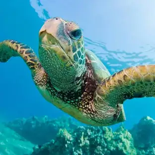

Vida Marinha: Veja quem vive no litoral mais próximo
Ocorrências registradas no ano:
Eventos sazonais:
Eventos sazonais:
Faixa de profundidade em metros:
Instituição que forneceu os dados:
Instituição que forneceu os dados:

Tartaruga-Verde (Chelonia mydas)
A tartaruga-verde, tartaruga-aruanã ou só aruanã é uma tartaruga marinha da família dos queloniídeos. É o único membro do género Chelonia.
...